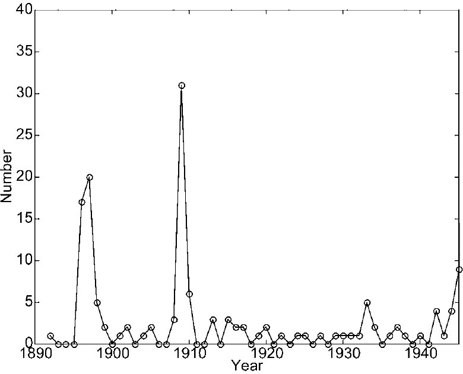
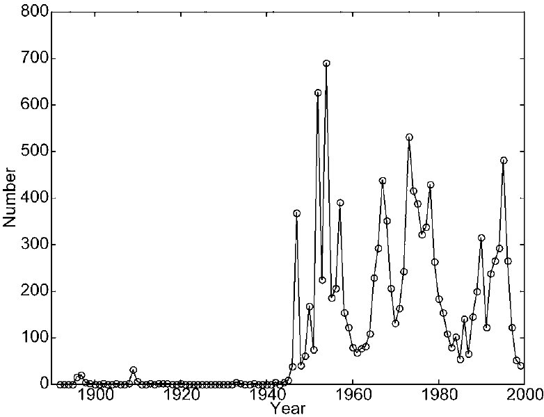
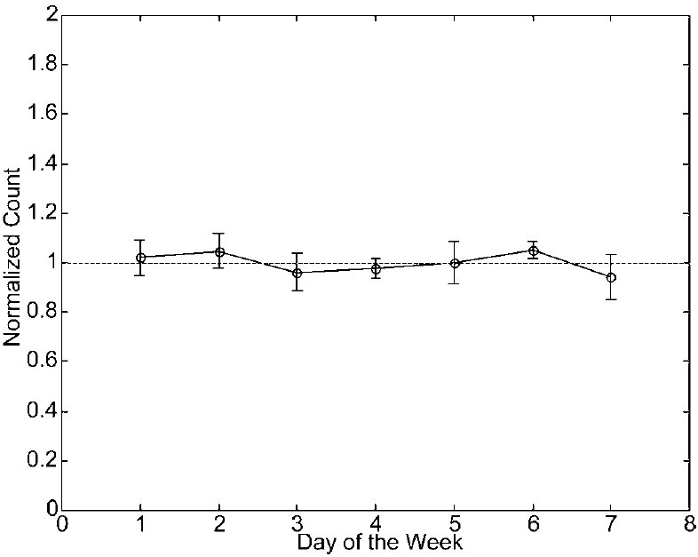
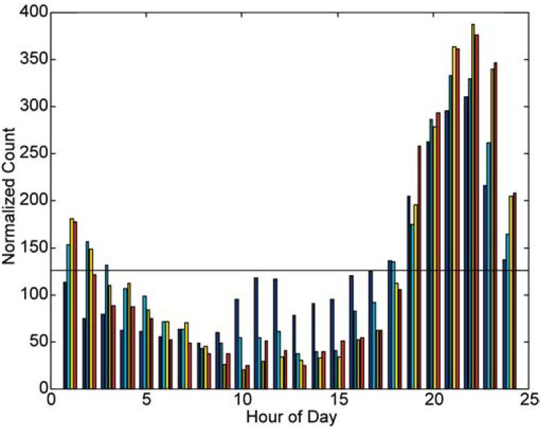
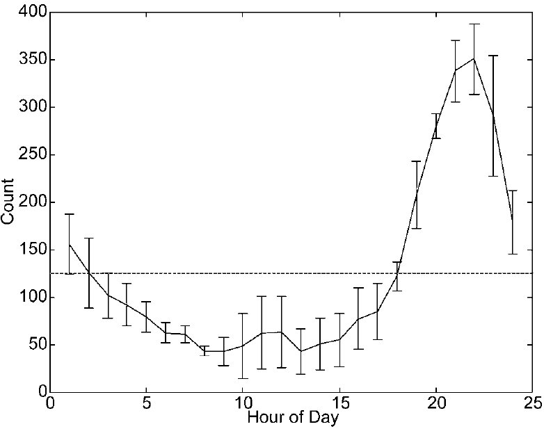
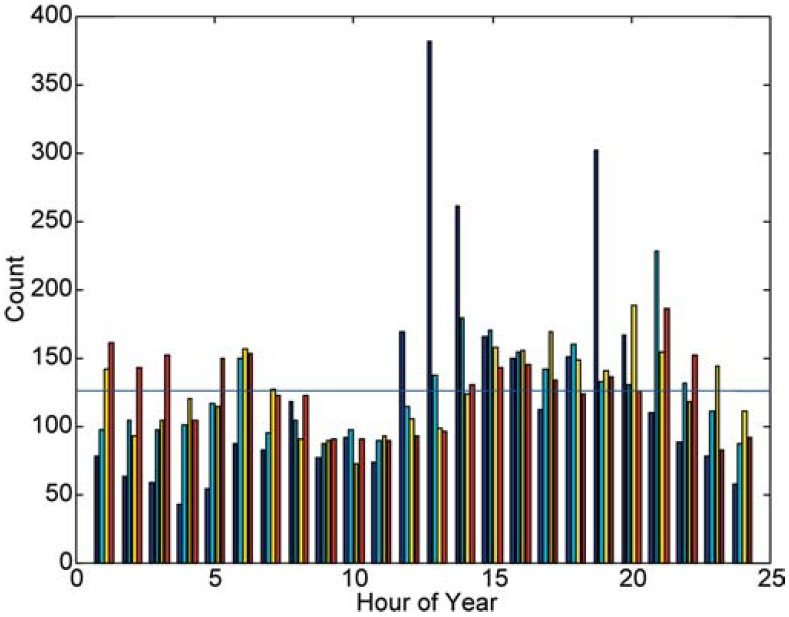
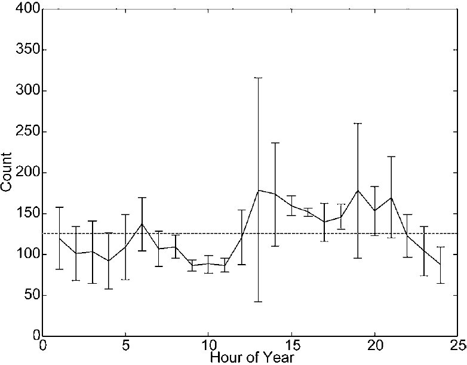
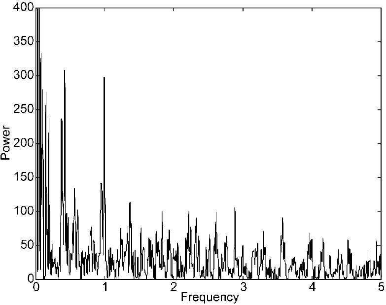
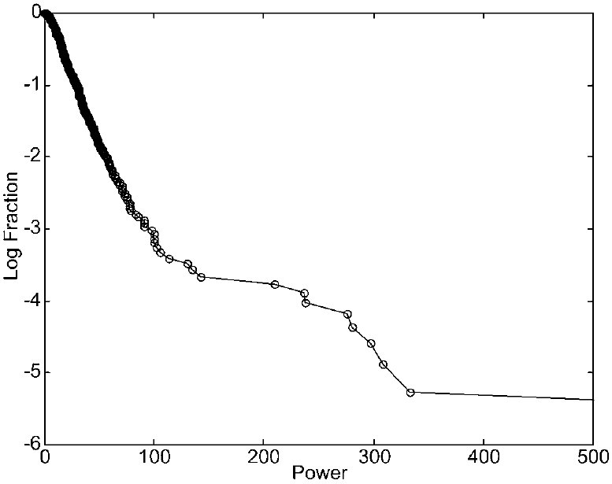

<!--#include virtual="/header-start.html" -->
<title>Analyse des séries temporelles d'un catalogue d'événements ovni : évidence d'une modulation du temps sidéral
  local</title>
<meta content="Sturrock, Peter A." name="author"/>
<meta content="Center for Space Science and Astrophysics, Stanford University, MC 4060, Stanford, CA 94305"
    name="copyright"/>
<!--#include virtual="/header-end.html" -->
<p class="abstract">L'analyse d'une grande base de donnée pourrait dégager des schémas non évidents lors de l'étude de
  cas individuels. Nous menont ici une analyse des séries temporelles d'une sélection de la version de 1999 du catalogue
  ovni de Hatch, comprenant 12 100 événements, pour lesquels des données géographiques et temporelles sont bien
  établies. Nous comparons nos résultats avec ceux de précédentes analyses de <a
      href="/people/p/PoherClaude/index.html">Poher</a> et <a href="/people/v/ValleeJacques/index.html">Vallée</a> sur
  de plus petits ensembles de données, et confirmerons que le taux d'événements montre une modulation reliée au temps
  sidéral local (TSL). Une telle modulation pourrait en principe être simplement un faux effet dû à l'influence combinée
  d'une forte modulation de moment du jour et d'une modulation du moment de l'année. Cependant, nous développons un test
  pour distinguer un tel faux motif d'un schéma intrinsèque. Ce test indique que la modulation TSL est intrinsèque.</p>
<h2><a id="1"></a>Introduction</h2>
<p> Le problème ovni ― celui de la compréhension de la cause des causes des signalements d'ovnis ― est
  extraordinairement compliqué. Nombre de milliers de rapports ont été remplis et enquêtés par l'<a
      href="/org/us/dod/af/index.html">US Air Force</a> (les projets <a
      href="/org/us/dod/af/amc/atic/projet/sign/index.html">Sign</a>, <a
      href="/org/us/dod/af/amc/atic/projet/grudge/index.html">Grudge</a> et <a
      href="/org/us/dod/af/amc/atic/projet/bluebook/index.html">Blue Book</a>), le projet français <a
      href="/org/eu/fr/cnes/sepra/index.html">SEPRA</a> (d'abord connu comme le "<a
      href="/org/eu/fr/cnes/gepan/index.html">GEPAN</a>"), et plus récemment par des projets au Brésil, Chili, <a
      href="/org/pe/index.html">Pérou</a> et Uruguay. De plus, de nombreux milliers de signalements ont été répertoriés
  par des organisations non-governmentales comme l'<a href="/org/us/asso/apro/index.html">APRO</a>, le <a
      href="/org/us/asso/nicap/index.html">NICAP</a> et le <a href="/org/us/asso/mufon/index.html">MUFON</a> aux
  Etats-Unis, et des organisations semblables dans d'autres pays. Un bref guide de la littérature étendue sur ce sujet
  est donné dans <a href="/people/s/SturrockPeterA/index.html">Sturrock</a> <span class="source">1999, p. 381</span>. Le
  lecteur pourra apprendre du début de l'histoire par <a href="/people/j/JacobsDavid/index.html">Jacobs</a> <span
      class="source">1975</span>, et se forger une certaine idée de la complexité du sujet à partir de 3 encyclopedies
  <span class="source">Clark:, 1998</span> <span class="source">Sachs, 1980</span> <span
      class="source">Story, R.: 1980</span>.</p>
<p> Il est significatif que ce problème complexe a reçu une attention limitée de la part de la communauté scientifique.
  Des raisons possibles à ce manque d'intérêt ont été examinées par un panel, convenu par M. <a
      href="/people/r/RockefellerLaurance/index.html">Laurance S. Rockefeller</a>, qui s'est <a
      href="/science/crypto/ufo/analyse/Projet/Pocantico.html">rencontré à Pocantico</a> (New York), en septembre <a
      href="../../../../../1/9/9/7/index.html">1997</a> <span class="source">Sturrock, 1999: 153</span>. Il apparaît
  qu'une raison majeure à ce manque de curiosité est la croyance que le <a
      href="/org/us/university/colorado/projet/condon/index.html">projet Colorado</a> financé par l'<a
      href="/org/us/dod/af/index.html">Air Force</a>, qui a débouché sur le "<a
      href="/time/1/9/6/8/CondonReport/index_fr.html">rapport Condon</a>" <span class="source">Condon &amp; Gillmor, 1969</span>,
  avait établi qu'il n'y avait pas de contenu significatif du problème. Un panel mis en place par l'<a
      href="/org/us/NAS.html">Académie Nationale des Sciences</a> pour passer en revue le <a
      href="/time/1/9/6/8/CondonReport/index_fr.html">rapport Condon</a> conféra au rapport <a
      href="../../../../../1/9/6/8/CondonReport/NAS.html">un bon bilan de santé</a> <span class="source">Clemence et al., 1969</span>,
  alors qu'il y a beaucoup à critiquer dans le rapport <span class="source">Sturrock, 1987</span>. Par exemple, le
  résumé du projet par <a href="/people/c/CondonEdwardU/index.html">Condon</a> est sérieusement décalé par rapport aux
  études de cas et synthèses de l'équipe du projet.</p>
<p> Cependant, une grande quantité de données a été recueillie depuis le <a
    href="/time/1/9/6/8/CondonReport/index_fr.html">rapport Condon</a>, et beaucoup de ces données ont été compilées
  sous la forme de <a href="../../../../../1">catalogues</a> lisibles sur ordinateur. Le 1<sup>er</sup> <a
      href="../../../../../1">catalogue</a> informatisé de cas d'ovnis fut probablement celui du Dr. <a
      href="/people/v/ValleeJacques/index.html">Jacques Vallée</a> dans les années 1960s. Depuis cette époque, d'autres
  <a href="../../../../../1">catalogues</a> ont été développés, dont notamment <em>UFOCAT</em>, compilé à l'origine par
  le Dr. <a href="/people/s/SaundersDavidR/index.html">David Saunders</a> dans le cadre de son travail pour le <a
      href="/org/us/university/colorado/projet/condon/index.html">projet du Colorado</a>, et plus récemment développé
  par <a href="/people/j/JohnsonDonaldA/index.html">Don Johnson</a> pour le <a href="/org/us/asso/cufos/index.html">Centre
    pour les Etudes sur les Ovnis (CUFOS)</a> ; <em>UNICAT</em>, compilé par le Dr. <span
      class="people">Willy Smith</span> ; <em>AIRCAT</em>, un <a href="../../../../../1">catalogue</a> de cas
  aéronautiques compilé par le Dr. <a href="/people/h/HainesRichardF/index.html">Richard F. Haines</a> ; et la <em>*U*
    Database</em> compilée par Larry Hatch (1999). Nous nous sommes concentrés sur la <em>*U* database</em>, Hatch ayant
  aimablement rendu ses données disponibles sous une forme pratique pour l'<a
      href="/science/crypto/ufo/analyse/index.html">analyse</a>.</p>
<p> Dans l'étude scientifique de tout phénomène, le défi théorique est d'expliquer des faits expérimentaux ou
  observationnels. Pour déterminer ces faits, nous avons besoins d'identifier des schémas cohérents dans les données,
  puis d'établir que ces schémas sont intrinsèques au phénomène, et non simplement le produit des processus
  d'acquisition et de compilation des données. <a href="/people/p/PoherClaude/index.html">Poher</a> (1973), dans un
  rapport séminal, analysa un ensemble de cas d'ovnis français et un ensemble d'autres cas mondiaux, et établit qu'un
  certain nombre de schémas sont identiques dans les 2 ensembles. <a href="/people/p/PoherClaude/index.html">Poher</a>
  et <a href="/people/v/ValleeJacques/index.html">Vallée</a> (1975) menèrent une extension cruciale de cette analyse en
  combinant et en comparant le catalog de <a href="/people/p/PoherClaude/index.html">Poher</a> avec celui compilé
  indépendamment par <a href="/people/v/ValleeJacques/index.html">Vallée</a>. Ces études indiquèrent qu'il y a bel et
  bien des schémas cohérents dans les données d'ovnis.</p>
<figure class="right side">
  <figcaption><strong>Figure 1 - Nombre d'événements/année dans la base sélectionnée de <i lang="en">1890/1945</i>
  </strong></figcaption>
  <a href="Fig1.jpg"></a>
</figure>
<p>Le but de cet article est d'étendre les analyses de <a href="/people/p/PoherClaude/index.html">Poher</a> et <a
    href="/people/v/ValleeJacques/index.html">Vallée</a> en analysant le <a href="../../../../../1">catalogue</a> de
  Hatch, qui est bien plus étendu et a été compilé indépendamment des compilations de <a
      href="/people/p/PoherClaude/index.html">Poher</a> et <a href="/people/v/ValleeJacques/index.html">Vallée</a>.
  Cependant, comme 1<sup>ère</sup> étape de cette analyse de <a href="../../../../../1">catalogue</a>, nous restreignons
  le périmètre de cet article à l'analyse de la chronologie. Peut-être le résultat le plus intriguant des aspects
  chronologiques des analyses <a href="/people/p/PoherClaude/index.html">Poher</a> et <a
      href="/people/v/ValleeJacques/index.html">Vallée</a> fut la forte suggestion que le rythme d'apparition
  d'événements ovni dépend du temps sidéral local (TSL). Pour cette raison, le principal objectif de notre analyse
  présente est de déterminer si l'analyse du <a href="../../../../../1">catalogue</a> plus étendu de Hatch confirme ce
  schéma des <a href="../../../../../1">catalogues </a>de <a href="/people/p/PoherClaude/index.html">Poher</a> et <a
      href="/people/v/ValleeJacques/index.html">Vallée</a> et, si tel est le cas, d'essayer de déterminer si ce schéma
  est intrinsèque au phénomène, ou extrinsèque au sens où il pourrait être attribué à d'autres propriétés connues et
  comprises de l'ensemble de données. </p>
<p>En section 2, nous analysons le rythme des événements ovni sur une échelle de temps historique, par jour de la
  semaine, heure du jour et heure dans l'année. En section 3, nous menons une analyse de spectre de puissance et
  trouvons un pic notable à 1y<sup>-1</sup> (1 cycle/an). Clairement, ceci pourrait simplement refléter une variation
  annuelle ayant une origine météorologique et/ou sociologique, mais elle pourrait avoir une cause astronomique. Afin de
  distinguer ces 2 possibilités, nous menons une analyse de spectre "running-wave" en section 4. Cette analyse indique
  clairement que la variation a une origine astronomique. Nous menons un test de significativité en section 5, et nous
  examinons le rythme des événements en fonction du TSL en section 6. Nous analysons 2 cas de test simulés en section 7,
  et offrons une brève discussion de ces résultats en section 8.</p>
<h2><a id="2"></a>Schéma de base</h2>
<figure class="left side">
  <figcaption>Figure 2 - Nombre d'événements/année dans la base de données sélectionnée de <i lang="en">1890/1999</i>
  </figcaption>
  <a href="Fig2.jpg"></a>
</figure>
<p>Hatch a aimablement sélectionné dans sa base de données de 1999 une liste de 12 100 cas pour lesquels les latitude,
  longitude, date et heure étaient connues. Nous designons chaque cas comme un "événement", laissant ouverte la question
  de sa nature ou, même, du fait qu'il ait réellement eu lieu ou ait été un <a
      href="/science/crypto/ufo/enquete/dossier/canular/index.html">canular</a> ou une <a
      href="/science/crypto/ufo/enquete/meprise/index.html">méprise</a> d'un objet ou phénomène bien connu. Le nombre
  d'événements est montré en fonction de l'année en figure 1 pour <a href="../../../../../1/8/9/0/index.html">1890</a> à
  <a href="../../../../../1/9/4/5/index.html">1945</a>, et en figure 2 pour <a href="../../../../../1/9/4/5/index.html">1945</a>
  à <a href="../../../../../1/9/9/9/index.html">1999</a>. Le total cumulatif pour <a
      href="../../../../../1/8/9/0/index.html">1890</a> à <a href="../../../../../1/9/9/9/index.html">1999</a> est
  montré en figure 3. Nous voyons qu'il n'y avait que quelques cas avant <a href="../../../../../1/9/4/5/index.html">1945</a>,
  et qu'il y eut une brusque apparition en <a href="../../../../../1/9/4/6/index.html">1946</a>. Le pic en <a
      href="../../../../../1/8/9/6/index.html">1896</a> et <a href="../../../../../1/8/9/7/index.html">1897</a> pourrait
  faire partie de la <a href="/time/Vagues.html">vague</a> des "<a
      href="/science/crypto/ufo/enquete/dossier/Airships/index.html">airships</a>" <span class="note">Voir, par exemple, <a
      href="/people/c/ClarkJerome">Clark</a>, 1998:46</span>, et le pic en <a
      href="../../../../../1/9/0/9/index.html">1909</a> pour faire partie de la <a href="/time/Vagues.html">vague</a>d'"aéronefs
  fantômes". Bien que le rythme des événements ait varié grandement d'année en année depuis <a
      href="../../../../../1/9/4/5/index.html">1945</a>, il est clair d'après la figure 3 qu'il y a eu un accroissement
  très aig&uuml; en <a href="../../../../../1/9/4/6/index.html">1946</a>. Ce fut l'année du <a
      href="/science/crypto/ufo/enquete/dossier/MontRainier/index.html">signalement de Kenneth Arnold</a> <span
      class="note">Voir, par exemple, <a href="/people/c/ClarkJerome/index.html">Clark</a>, 1998:139</span>, qui reçu
  une attention mondiale et initia la <a href="/time/Vagues.html">vague</a> actuelle de "<a
      href="/science/crypto/ufo/FlyingSaucers.html">soucoupes volantes</a>".</p>
<p> Nous souhaitons maintenant examiner le rythme d'événements par jour de la semaine, etc. Nous pourrions prendre la
  base de données entière et former l'histogramme par jour de la semaine, etc. Cependant, nous souhaitons savoir s'il
  existe un schéma cohérent quelconque dans le phénomène, comparé avec un schéma qui vient et s'en va. Nous avons donc
  divisé la base de données en 4 intervalles de temps A, B, C et D, listés dans le tableau 1, qui contiennent des
  nombres égaux d'événements et que nous désignerons sous le terme de "blocs".</p>
<figure class="right side">
  <figcaption>Tableau 1 - Périodes couvertes par les 4 blocs chronologiques</figcaption>
  <table>
    <tr>
      <td colspan="6">
        <hr>
      </td>
    </tr>
    <tr>
      <td>A</td>
      <td>Mars</td>
      <td>1892</td>
      <td>à</td>
      <td>novembre</td>
      <td> 1957</td>
    </tr>
    <tr>
      <td>B</td>
      <td>Novembre</td>
      <td>1957</td>
      <td>à</td>
      <td>mars</td>
      <td>1973</td>
    </tr>
    <tr>
      <td>C</td>
      <td>Mars</td>
      <td>1973</td>
      <td>à</td>
      <td>août</td>
      <td>1982</td>
    </tr>
    <tr>
      <td>D</td>
      <td>Août</td>
      <td>1982</td>
      <td>à</td>
      <td>novembre</td>
      <td><a href="../../../../../1/9/9/9/index.html">1999</a></td>
    </tr>
    <tr>
      <td colspan="6">
        <hr>
      </td>
    </tr>
  </table>
</figure>
<p>Les histogrammes selon le jour de la semaine, pour les 4 blocs chronologiques, sont montrés dans le tableau 1, dans
  lequel nous listons aussi la moyenne et la déviation standard pour chaque jour de la semaine. Les histogrammes sont
  aussi montrés en figure 4. Il est clair d'après cette figure qu'il n'existe que peu d'éléments pour soutenir un schéma
  basé sur le jour de la semaine. Nous pourrions vérifier cette conjecture au moyen du test familier du
  &chi;<sup>2</sup>. Nous formons la <a href="/science/crypto/ufo/analyse/statistique/index.html">statistique</a></p>
<table>
  <tr>
    <td></td>
    <td>
      <div>K</div>
    </td>
    <td>
      <div>(n<sub>k</sub> - n<sub>k</sub>(exp))<sup>2</sup></div>
    </td>
    <td></td>
    <td></td>
  </tr>
  <tr>
    <td>&chi;<sup><sup></sup>2</sup> =</td>
    <td>
      <div>&Sigma;</div>
    </td>
    <td>
      <hr>
    </td>
    <td></td>
    <td>, (2.1)</td>
  </tr>
  <tr>
    <td></td>
    <td>
      <div>k=1</div>
    </td>
    <td>
      <div>&sigma;<sub>k</sub><sup>2</sup></div>
    </td>
    <td></td>
    <td></td>
  </tr>
</table>
<p>où k énumère les jours de la semaine, n<sub>k</sub> est le total moyen, et r<sub>k</sub> is est la déviation standard
  du total, pour chaque jour de la semaine.</p>
<figure class="right side">
  <figcaption>Figure 4 - Histogrammes du jour de la semaine pour les 4 blocs chronologiques A à D. La ligne horizontale
    est la valeur moyenne
  </figcaption>
  
</figure>
<p>Si nous considérons l'hypothèse que chaque événement est independent de tous les autres événements, et peut
  intervenir n'importe quel jour de la semaine avec une probabilité uniforme, alors le choix approprié pour
  n<sub>k</sub>(exp) est 12100/7, i.e. 1729, et le choix approprié pour &sigma;<sub>k</sub> est sqrt(1729), i.e. 41,6.
  Pour ce cas, l'équation 2.1 donne &chi;<sup><sup></sup>2 </sup>= 18,1. Pour 6 degrés de liberté, la probabilité
  d'obtenir cette grande valeur de &chi;<sup>2</sup> ou plus par hasard est de 0,006. Par conséquent l'hypothèse
  pourrait être rejetée, mais pas sur la base d'éléments incontestables.</p>
<p> Nous cherchons maintenant à voir s'il existe un schéma quelconque qui apparaît de manière cohérence à travers la
  base de données. Nous investiguons cette question en évaluant la statistique &chi;<sup><sup></sup>2</sup> en utilisant
  les données expérimentale du tableau 2. Nous évaluons le &chi;<sup><sup></sup>2</sup> en utilisant les données des
  colonnes 7 et 8 dans l'équation 2.1 : si le schéma est cohérent, et que le scatter in count rate est inférieur à la
  déviation du count rate de sa valeur attendue, alors nous nous attendrons à obtenir une grande valeur du
  &chi;<sup><sup></sup>2</sup> (pour le nombre donné de degrés de liberté). D'un autre côté, si le count rate varie de
  manière substantiellement de bloc en bloc, de sorte que le scatter est aussi grand ou plus grand que l'écart avec le
  taux attendu, alors nous nous attendrons à ce que le &chi;<sup><sup></sup>2</sup> soit petit.</p>
<figure class="left side">
  <figcaption>Fig. 5. Mean and standard deviation for number of events per day per block. The horizontal line is the
    mean value.
  </figcaption>
  
</figure>
<p> Nous montraons les données des colonnes 7 et 8 en figure 5, qui ne donne aucun indice évident d'un écart cohérent
  avec la distribution uniforme. Nous trouvons que &chi;<sup><sup></sup>2 </sup>= 3,93. Pour 6 degreés de liberté, il y
  a une probabilité de 0,39 d'obtenir une valeur aussi grande ou plus grande par hasard. Par conséquent, comme attendu,
  ce test confirme qu'il n'y a aucun indice d'un écart cohérent de l'uniformité concernant le jour de la semaine.</p>
<p> Nous avons mené une analyse semblable pour étudier la variation of event rate with hour of the day. The
  corresponding histograms are shown in Figure 6. It is obvious that there is a huge variation, which is fairly
  consistent among timeblocks, of the count by time of day. The minimum is at about mid-day, and the maximum at about 10
  pm. The variation is so large that a chi-square test is redundant (The actual value of &chi;<sup><sup></sup>2</sup> is
  684). The same data are shown as an errorbar display in Figure 7. </p>
<figure class="right side">
  <figcaption>Fig. 6. HOD histograms for the four time blocks A-D. The horizontal line is the mean value.
  </figcaption>
  
</figure><p>It is convenient to carry out an analysis of time-of-year variation similar to our analysis of time-of-day
  variation. We have therefore divided the year into 24 equal parts (taking time of day into account) of about 15.22
  days each. We refer to these divisions as "hours of year" (HOY) and ordinary hours as "hours of day" (HOD). The
  histograms are shown in Figure 8, and the error-bar display in Figure 9. This dataset also leads to a very large value
  of the chi-square statistic (122.7), confirming what is obvious from the plots that there is a significant and fairly
  consistent variation in the count rate with time of year. There is a minimum around May and a broad maximum around
  September.</p>
<h2>Analyse du spectre de puissance</h2>
<figure class="left side">
  <figcaption>Fig. 7. Mean and standard deviation of the number of events per hour per block. The horizontal line is the
    mean value.
  </figcaption>
  
</figure>
<p> In any investigation of a time series, power spectrum analysis can be informative. Perhaps the simplest procedure
  for a large but irregular time series is to form the "Schuster periodogram" or "Rayleigh power" (Bretthorst, 1988;
  Mardia, 1972), which is given by </p>
<table>
  <tr>
    <td></td>
    <td>
      <div>1</div>
    </td>
    <td bgcolor="#333333" width="1"></td>
    <td>
      <div>N</div>
    </td>
    <td></td>
    <td bgcolor="#333333" width="1"></td>
    <td><sup>2</sup></td>
  </tr>
  <tr>
    <td>S<sub>R</sub>(v) =</td>
    <td>
      <hr>
    </td>
    <td bgcolor="#333333" width="1"></td>
    <td>
      <div>&Sigma;</div>
    </td>
    <td>e<sup>i2&pi;vt<sub>n</sub></sup></td>
    <td bgcolor="#333333" width="1"></td>
    <td>, (3.1)</td>
  </tr>
  <tr>
    <td></td>
    <td>
      <div>N<sup></sup></div>
    </td>
    <td bgcolor="#333333" width="1"></td>
    <td>
      <div>n=1</div>
    </td>
    <td></td>
    <td bgcolor="#333333" width="1"></td>
    <td></td>
  </tr>
</table>
<figure class="right side">
  <figcaption>Fig. 8. Histograms formed from HOY for the four time blocks A-D.</figcaption>
  
</figure>
<p>where tn is the time of event n, N is the total number of events, and m is the frequency. The power spectrum as
  computed from this formula is shown for frequencies in the range 0 to 5y<sup>-1</sup> in Figure 10. We see that, apart
  from the unavoidable strong peak near zero frequency, there are two notable peaks, one at 0.42y<sup>-1</sup> with S =
  308, and the other close to 1y<sup>-1</sup> with S = 297. The former has no obvious significance, but the latter is
  most likely related to the calendar year. It may have a purely calendar origin, due to the variation of the event rate
  during the year (as shown in Figure 8), but it could conceivably have an astronomical origin, since some fraction of
  UFO reports may be due to the misperception of celestial objects. </p>
<figure class="left side">
  <figcaption>
    Fig. 9. Mean and standard deviation of the number of events per HOY per block. The horizontal line is the mean
    value.
  </figcaption>
  
</figure>
<p>If the events were independent, <em>S</em> would have an exponential distribution such that the probability of
  obtaining a power S or more would be e<sup>-<em>S</em></sup>. However, events appear to be highly correlated,
  occurring in bunches, so we may not interpret the power spectrum in this way. We find that in the frequency range 0 to
  10y<sup>-1</sup>, there are 390 peaks. A semi-logarithmic display of the cumulative distribution of these peaks is
  shown in Figure 11. We see that, except for the 10 to 15 strongest peaks, the cumulative distribution is close to
  exponential. We find that if we "normalize" the Rayleigh power as follows,</p>
<p><em>S</em> = <em>S</em><sub>R</sub>/25, (3:2)</p>
<figure class="right side">
  <figcaption>Fig. 10. Rayleigh power spectrum.</figcaption>
  
</figure>
<p>the cumulative distribution of the normalized power satisfies</p>
<p> P(<em>S</em> &gt; <em>S</em><sub>0</sub>) &cong; e<sup>-<em>S</em><sub>0</sub></sup></p>
<p> for most of the range. Hence the power at 1y<sup>-1</sup> corresponds to a "normalized" power S = 12. The
  probability of obtaining this power or more would be about 6 10<sup>-6</sup>.</p>
<h2><a id="4"></a>Analyse à onde running du spectre de puissance</h2>
<figure class="left side">
  <figcaption>Fig. 11. Cumulative distribution of powers computed from Equation 3.1.</figcaption>
  
</figure><p>In the previous section, we looked into the possibility that the event rate contains one or more
  oscillations in time. In this section, we ask a different but related question. We look into the possibility that the
  event rate exhibits a significant pattern in terms of a rotating reference frame. We know that if the frame rotates
  with respect to the Earth with a one-day rotation period, there is a very strong modulation, shown in Figures 6 and 7.
  If it were to turn out that many events are due to observations of the planet Jupiter, then one would expect to find a
  significant pattern in terms of a frame that has the same mean rotation rate that Jupiter has with respect to the
  Earth.</p>
<p> It is convenient to take as our basic reference frame one in which the Sun has a fixed location. With respect to an
  observer on Earth, this frame rotates with a period of one day. With respect to an observer on a nearby star, this
  frame rotates with a period of one year. With respect to this basic frame, Jupiter rotates with a period of 398.88
  days (Jupiter's synodic period).</p>
<p> We denote by &Phi;<sub>n</sub> the angular position of the zenith (the position looking vertically upward) for event
  n, but normalize the angle to run from 0 to 1:</p>
<p>&Psi; = &Phi;/2&pi;. (4.1)</p>
<p> This quantity is related the hour of day of the event by</p>
<p>&Psi; = (HOD)/24</p>
<p>We now denote by m the angular velocity of the test frame with respect to the basic (Sun-locked) frame, where m is
  measured in cycles per year. Then we can evaluate the possibility that events "cluster" with respect to the test frame
  by forming the following form of the Rayleigh power:</p>
<p> S&eth;m&THORN; = <br> 1<br> NX N<br> n=1<br> exp&frac12;i2p&eth;wn &thorn; mtn&THORN; <br> <br> 2<br> ;
  &eth;4:3&THORN;</p>
<p> where t is to be measured in years.</p>
<p> We note that m = 0 corresponds to the Sun-locked frame and m = 1y<sup>-1</sup> corresponds to the star-locked frame,
  for which the combination w&thorn;mt has a well known astronomical interpretation. If t is measured from 0 hours on
  January 1 of some year, then t (in y1) is related to the "hour of year" introduced in Section 2 by</p>
<p> t&eth;mod 1&THORN; = &eth;HOY&THORN;=24: &eth;4:4&THORN;</p>
<p>We see from Equations 4.2 and 4.4 that the combination w&thorn;mt is related to the sum of HOD and HOY. This
  combination is related to LST by the equation</p>
<p> LST = HOD &thorn; HOY &thorn; 6:67: &eth;4:5&THORN;</p>
<p> We noted in Section 3 that there appears to be a modulation of the event rate with period 1 year. This annual
  variation may of course be due to a seasonal variation in hours of daylight, social patterns, atmospheric conditions,
  etc. The interplay of an annual modulation and the strong daily modulation shown in Figures 6 and 7 would lead to a
  combined effect that may be written schematically as a probability distribution function (pdf) given by</p>
<p> P&eth;HOD;HOY&THORN; = P&eth;HOD&THORN;P&eth;HOY&THORN;; &eth;4:6&THORN;</p>
<p> where P(HOD) and P(HOY) are the pdf's for events in terms of HOD and HOY, respectively. Since each pdf is periodic,
  with period 24, the simplest modulations are of the form</p>
<p> P&eth;HOD&THORN; = 1 &thorn; D sin 2p<br> HOD<br>  24 &thorn; vD &eth;4:7&THORN;<br> and<br> P&eth;HOY&THORN;
  = 1 &thorn; Y sin 2p<br> HOY<br>  24 &thorn; vY: &eth;4:8&THORN;</p>
<p> We see that Equation 4.6 now yields</p>
<p> P&eth;HOD;HOY&THORN; = 1 &thorn; D sin 2p<br> HOD<br>  24 &thorn; vD&thorn; Y sin 2p<br> HOY<br>  24
  &thorn; vY<br>
  &thorn;<br> 1<br> 2<br> DY cos 2p<br> HOD<br> 24 &thorn; vD  2p<br> HOY<br>  24  vY<br> cos 2p<br> HOD<br> 24
  &thorn; vD &thorn; 2p<br> HOY<br>  24 &thorn; vY &eth;4:9&THORN;</p>
<p> menant à un terme qui est fonction du TSL et d'un autre terme, d'exactement la même amplitude, qui est fonction de
  la quantité</p>
<p> ALST = HOD  HOY &thorn; 6:67; &eth;4:10&THORN;</p>
<p> qui nous désignons comme l'"Alias de Temps Sideral Local" (ATSL). If the Rayleigh power defined by Equation 4.3
  leads to a power spectrum with two equal peaks at m = 1y<sup>-1</sup> and at m=1y<sup>-1</sup>, we may infer that the
  annual modulation found in the analysis of Section 3 was due simply to the seasonal effect. But if we find that there
  is a strong peak at m = 1y<sup>-1</sup>, and no peak―or only a weak peak―at m=1y<sup>-1</sup>, we may infer that the
  annual modulation has some kind of astronomical origin.
</p>
<p> The power spectrum in terms of normalized power is shown for frequencies in the range 5 to 5y<sup>-1</sup> in
  Figure 12, in which the powers for positive frequencies are shown as positive quantities, and the powers for negative
  frequencies are shown as negative quantities. Ignoring the inevitable large peak at zero Fig. 12. Running-wave power
  spectrum, forward waves shown with positive power, and reverse waves shown with the negative of the power frequency,
  we see that there are significant peaks at or near m = 1y<sup>-1</sup> (S = 125)<br> and m = 2y<sup>-1</sup> (S = 77).
  At exactly m = 1y<sup>-1</sup>, S = 102, and at exactly m = 2y<sup>-1</sup>,<br> S=75. By contrast, at exactly
  m=1y<sup>-1</sup>, S=3.5, and at exactly m=2y<sup>-1</sup>, S=8.5.</p>
<p> A semi-logarithmic display of the cumulative distribution of peaks for the frequency range10 to 10y<sup>-1</sup> is
  shown in Figure 13. We again find that, except for a few peaks, the cumulative distribution is close to exponential.
  If we"normalize" the Rayleigh power as follows,</p>
<p>S = SR=7; &eth;4:11&THORN;</p>
<p>the cumulative distribution of the normalized power satisfies</p>
<p> P&eth;S . S0&THORN;'eS0 &eth;4:12&THORN;</p>
<p> for most of the range. Hence the peak near m &frac14; 1y1 for the forward wave corresponds to a normalized power of
  17.9; the probability of obtaining this power or higher is about 1.7 10<sup>-8</sup>. The peak near m=2y<sup>-1</sup>
  for the forward wave corresponds to a normalized power of 11.0; the probability of obtaining this power or higher is
  about 1.7 10<sup>-5</sup>.</p>
<p> Since the power spectrum computed from Equation 4.3 is not symmetric in positive and negative frequencies, it
  appears not to be due to the interplay of the HOD and HOY modulations. The asymmetry indicates that there is a
  modulation in terms of LST. It is not unreasonable that the modulation should show up at m = 2y<sup>-1</sup> as well
  as at m = 1y<sup>-1</sup>, since Equations 4.7 and 4.8 represent only the simplest approximations to the pdfs, and
  more accurate approximations must be<br> expected to contain terms of higher order.</p>
<p> Fig. 13. Cumulative distribution of powers computed from Equation 4.3.</p>
<h2><a id="5"></a>Test de pics TSL dans la spectre à onde running</h2>
<p> We saw that the distribution of peak powers differs significantly from the form in Equation 4.12 to be expected of
  independent random variables. This is because, as mentioned earlier, consecutive counts of events are highly
  correlated, since events arrive in "bunches." Hence we need a more reliable procedure for obtaining significance
  estimates.</p>
<p> A convenient method of obtaining robust significance estimates is the "shuffle test." We retain the actual lists of
  times of events and of times of day of events, but we randomly reassign members of one list to members of the other
  list. For each such "shuffle," we compute the power using Equation 4.3. We may then determine the fraction of shuffles
  for which the power exceeds any specified value.</p>
<p> We have carried out this procedure for both m=1y<sup>-1</sup> and m=2y<sup>-1</sup>, for 10,000 Fig. 14. Results of
  a test of 10,000 shuffles for m = 1y<sup>-1</sup> showing (thick line) the logarithm of the fraction of trials that
  give a power exceeding a value shown in the abscissa. The thin line is the curve computed from Equation 5.2. The
  asterisk shows the actual power</p>
<p> (S = 102.3) for m = 1y<sup>-1</sup>.</p>
<p>TABLE 2<br> Histogram Data for Breakdown by Day of the Week<br> A B C D Total Mean SD<br> Sunday 459 399 441 464 1763
  440.75 29.53<br> Monday 458 452 412 486 1808 452.00 30.51<br> Tuesday 400 459 420 384 1663 415.75 32.38<br> Wednesday
  433 409 405 440 1687 421.75 17.35<br> Thursday 478 423 440 390 1731 432.75 36.62<br> Friday 447 446 476 449 1818
  454.50 14.39<br> Saturday 350 437 431 412 1630 407.50 39.79
</p>
<p> shuffles each. We show in Figure 14 the log of the fraction (ordinate) of simulations for m=1y<sup>-1</sup> that
  have power in excess of the value shown in the abscissa. We find that this curve is similar in shape to that of the
  "false alarm" probability discussed by Scargle (1982). For M independent trials, each corresponding to a power
  spectrumanalysis of independent normally distributed data, for which the power spectrum is known to be exponential,
  Scargle shows that the probability that the maximum of the M powers exceeds a given value S is given by</p>
<p> P = 1  &eth;1  eS&THORN;M: &eth;5:1&THORN;</p>
<p> We find that, if we generalize this formula to</p>
<p> P = 1  &eth;1  eaS&THORN;M; &eth;5:2&THORN;</p>
<p>we get a good fit to the results of the shuffle operation for the case m=1yr<sup>-1</sup> with the values M = 10,000
  and a = 0.23. This fit enables us to extend the results of the shuffle test. From this extrapolation, we find that the
  shuffle test indicates that the probability of obtaining a power of 102 or more is 10<sup>-6</sup>.19, i.e. 6.5
  10<sup>-7</sup>.</p>
<p>We have repeated these calculations for m=2yr<sup>-1</sup>. We show in Figure 15 the log of the fraction (ordinate)
  of simulations for m = 2yr<sup>-1</sup> that have power in excess of the value shown in the abscissa. We get a good
  fit to the results of the<br> shuffle operation for the case m &frac14;
  2yr<sup>-1</sup> with the values M = 13 and a = 0.425.</p>
<p> Fig. 15. Results of a test of 10,000 shuffles for m = 2y<sup>-1</sup> showing (thick line) the logarithm of the
  fraction of trials that give a power exceeding a value shown in the abscissa. The thin line is the curve computed from
  Equation 5.2. The asterisk shows the actual power</p>
<p> (S = 75.5) for m = 2y<sup>-1</sup>. </p>
<p> Using this fit to extrapolate the curve, we find that the shuffle test indicates that the probability of obtaining a
  power of 75.6 or more is 10<sup>-1</sup>2.84, i.e. 1.45 10<sup>-1</sup>3.</p>
<h2><a id="6"></a>Schémas LST et ALST</h2>
<p> Il est intéressant d'examiner la distribution des événements par rapport au TSL, which is related to HOD and HOY by
  Equation 4.5. The histogram is shown in Figure 16. It appears to be fairly uniform except in the range 18 to 24 hours,
  where there is a noticeable bump. The same data are shown as an error-bar display in Figure 17, which indicates that
  the structure seen in Figure 16 is indeed consistent through the four time blocks. We find that the chi-square
  statistic computed from data in Figure 17 has the value 82.3. For 23 degrees of freedom, the probability of obtaining
  this value by chance is only 1.4 10<sup>-8</sup>. Hence the result of this test is significant, but not as significant
  as the result of the running-wave test of Section 5. This is understandable, since the chi-square test treats all
  "bins" as independent, whereas the Rayleigh-power approach takes account of the phase relationship between bins.
</p>
<p> We pointed out in Section 4 that if the LST modulation were due to a convolution of the HOD and HOY modulations, the
  resulting modulation should be approximately symmetric with respect to LST and ALST defined by Equation 4.10. It is
  therefore interesting to compare with Figures 16 and 17 the corresponding figures for ALST. These are shown as Figures
  18 and 19. We see that these are not at all like Figures 16 and 17. By contrast, Figures 18 and 19 appear to be
  featureless. Indeed, when we compute the chi-square statistic from Equation 2.1, using data appearing in Figure 19, we
  find that v2 = 8.59. For 23 degrees of freedom, there is a probability of 0.997 of obtaining this value or more. Hence
  the ALST histogram is consistent with no modulation, but the degree to which this is true is somewhat surprising. This
  test indicates that the LST modulation is most probably not due to the convolution of the HOD and HOY modulations.
  This finding supports the results of Section 5.</p>
<p> Fig. 16. Histograms formed from LST for the four time blocks A-D.</p>
<p>Fig. 17. Mean and standard deviation of the number of events per hour of LST per block. The<br> horizontal line is
  the mean value.</p>
<p> Fig. 18. Histograms formed from ALST for the four time blocks A-D.</p>
<h2><a id="7"></a>Cas de test</h2>
<p> Dans la section 4, we gave a theoretical argument as to why one would expect that the powers of the forward and
  reverse waves would be similar if the oscillation is due to an interplay of the time-of-day and the time-of-year
  distributions. Since this is a crucial argument in support of the case for an LST effect, we now reconsider this
  argument from a different point of view. We consider two hypothetical catalogs: in one there is an LST effect, and in
  the other there is not. We expect that the powers of the forward and reverse waves will be similar in the second case
  and dissimilar in the first case. We retain the actual dates of events, but we modify the time-of-day
  distributions.</p>
<p> Taking our lead from Figure 17, we consider a random distribution of LST values that is flat over 80 % of the
  phase-of-year range, but is larger by 30% in the other 20% of the phase. We then compute the powers of the forward and
  reverse waves by the method of Section 4. The result is shown in Figure 20. We see that there is a strong peak for the
  forward wave at m = 1y<sup>-1</sup>, but there is no significant peak for the reverse wave. The forward wave also has
  a small peak at m = 2y<sup>-1</sup>.</p>
<p> For comparison, taking our lead from Figure 9, we consider a random distribution of HOY values that is flat over 70
  % of the phase-of-year range, but is larger by 20 % in the other 30 % of the phase. We then compute the powers of the
  forward and reverse waves by the method of Section 4. The result is shown in Figure 21. We see that the forward and
  reverse waves have peaks of comparable size at m = 1y<sup>-1</sup>. There are also small peaks at m = 2y<sup>-1</sup>.
</p>
<p> Fig. 19. Mean and standard deviation of the number of events per hour of ALST per block. The horizontal line is the
  mean value.</p>
<p> This comparison confirms our expectation that the combined effects of time-of-day and time-of-year modulations leads
  to comparable powers in both the forward and reverse waves, whereas an LST modulation leads to significant power in
  only the forward wave.</p>
<p> Fig. 20. Running-wave power spectrum, forward waves shown with positive power, and reverse waves shown with the
  negative of the power, for a model with an LST modulation.</p>
<p> Fig. 21. Running-wave power spectrum, forward waves shown with positive power, and reverse waves shown with the
  negative of the power, for a model that has a significant HOY modulation but no LST modulation.</p>
<h2><a id="8"></a>Discussion</h2>
<p> It appears from our analysis that the rate of UFO events exhibits a significant variation in terms of LST. There may
  be some mundane explanation of this curious fact, but this explanation is not obvious. What seemed to be an obvious
  interpretation, that the modulation is due to the combined effect of the time-of-day and time-of-year modulations,
  seems to be ruled out by the running-wave power spectrum analysis since this effect would be symmetric with respect to
  the forward and reverse waves, which disagrees with our data analysis. The analysis of Section 5 seems to show that
  the peaks at m = 1y<sup>-1</sup> and at m = 2y<sup>-1</sup> in the running-wave analysis are highly significant.
  Nevertheless, the results of this test cannot be taken at face value, since there are strong patterns in both the HOD
  distribution and the HOY distribution. It will be important to examine the catalog for systematic effects that might
  explain the apparent LST effect. It will also be important to devise other significance tests that hopefully will be
  valid even though there are strong patterns in the HOD and HOY distributions. It is also clearly important to apply
  the same analysis to an independent catalog such as the UFOCAT catalog.</p>
<p> If the effect does indeed have an astronomical origin, it points to a source with right ascension in the range 21.5
  &plusmn; 1.5. Based on the analysis carried out to date, the declination is unknown.</p>
<p> The analysis reported in this article appears to support the early findings of Poher (1973) and of Poher and Vallee
  (1975), which were based on independent and comparatively small catalogs.</p>
<h2><a id="9"></a>Remerciements</h2>
<p> I am indebted to Larry Hatch for generously providing the data used in this analysis, and to many friends for
  helpful discussions on topics related to this article, including notably Claude Poher, Jacques Vallee, and
  Jean-Jacques Velasco.</p>
<h2><a id="10"></a>Références</h2>
<ul>
  <li> Bretthorst, G. L. (1988). Bayesian spectrum analysis and parameter estimation. In Berger, J., Fienberg, S., Gani,
    J., Krickeberg, K., &amp; Singer, B (Eds.). Lecture Notes in Statistics (Vol. 48). Berlin, Germany,
    Springer-Verlag.</li>
  <li>Clark, J. (1998). The UFO Encyclopedia (2nd ed.). Detroit, MI: Omnigraphics.</li>
  <li>Clemence, G. M., Crane, H. R., Dennison, D. M., Fenn, W. O., Hartline, H. K., Hilgard, E. R., Kac, M.,
    Reichelderfer, F. W., Rubey, W. W., Shane, C. D., &amp; Villard, O. G., (1969). Review of The University of Colorado
    report on unidentified flying objects, by a panel of the National Academy of Sciences. Icarus, 11, 440-443.</li>
  <li> Condon, E. U., &amp; Gillmor, D. S. (1969). Scientific Study of Unidentified Flying Objects. Bantam.</li>
  <li>Hatch, L. (1999). *U* Database. Available at: www.jps.net/larryhat.</li>
  <li>Jacobs, D. M. (1975). The UFO Controversy in America. Indiana University Press.</li>
  <li>Mardia, K. V. (1972). Statistics of Directional Data. New York: Academic.</li>
  <li>Poher, C. (1973). Etudes statistiques portant sur 1000 temoignages d'observation d'UFO. GEPAN report; CNES,
    Toulouse, France. </li>
  <li> Poher, C., &amp; Vallee, J. (1975). Basic patterns in UFO observations, AIAA 13TH Aerospace Sciences Meeting.
    Pasadena, CA, January 20-22, 1975, Paper #75-42, pp. 20-22.</li>
  <li>Sachs, M. (1980). The UFO Encyclopedia. Putnam's Sons.</li>
  <li>Scargle, J. D. (1982). Studies in astronomical time series analysis. II. Statistical aspects of spectral analysis
    of unevenly spaced data. Astrophysical Journal 263, 835-853.</li>
  <li>Story, R. D. (1980). The Encyclopedia of UFOs. Doubleday and Sons.</li>
  <li>Sturrock, P. A. (1987). Evaluation of the Condon Report on the Colorado UFO Project. Journal of Scientific
    Exploration, 1, 75-100.</li>
  <li> Sturrock, P. A. (1999). The UFO Enigma. Warner Books. </li>
</ul>
<!--#include virtual="/footer.html" -->
